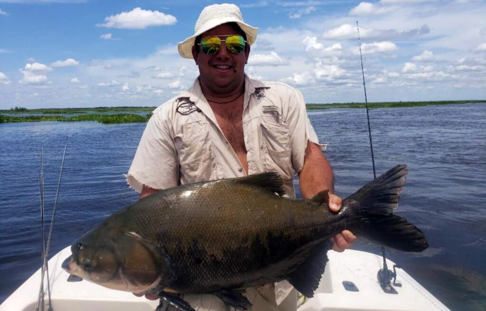

Amamos lo que hacemos
Mas de 20 años de trayectoria nos avalan. Sea en río o en mar, garantizamos la mejor experiencia. Porque es eso, una experiencia unica e inigualable; ya sea por deporte o por recreacion, encontramos ese momento de satisfaccion y paz.
Servicios de guía, traslado y equipos. de costa o embarcado.
Ultima salida desde Mardel

De costa, Monte Hermoso

Conciencia y Respeto
Fomentemos la pesca responsable,el cuidado de las especies y la higiene de espacios publico.
Deberán ordenarse las pesquerías con el fin de asegurar que la pesca y la elaboración de pescado se realicen de forma que se reduzcan al mínimo los efectos negativos sobre el medio ambiente, disminuyan los desperdicios y se mantenga la calidad del pescado. capturado.
Las mejores capturas del pais


